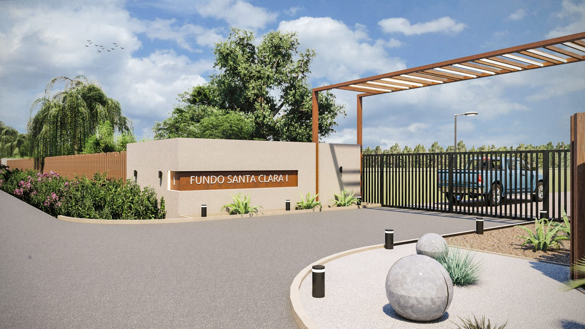
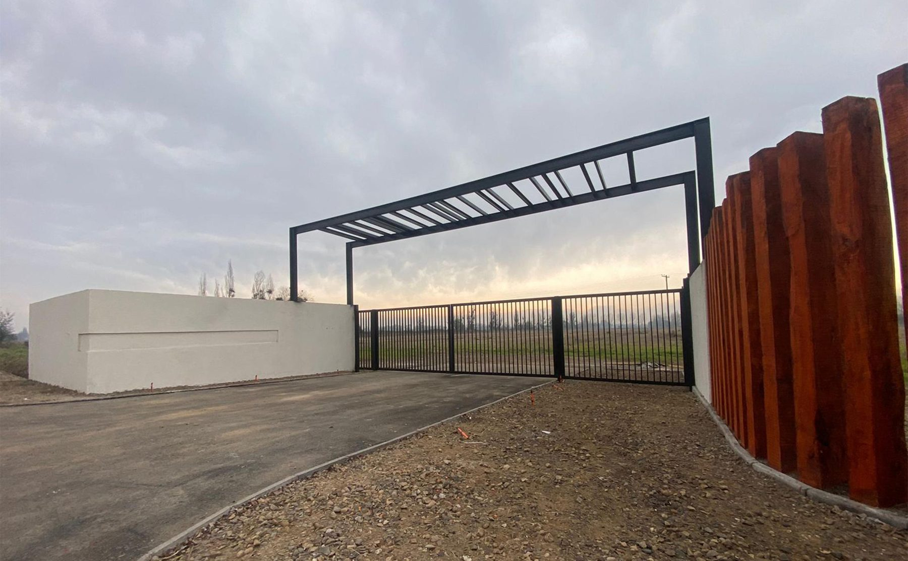
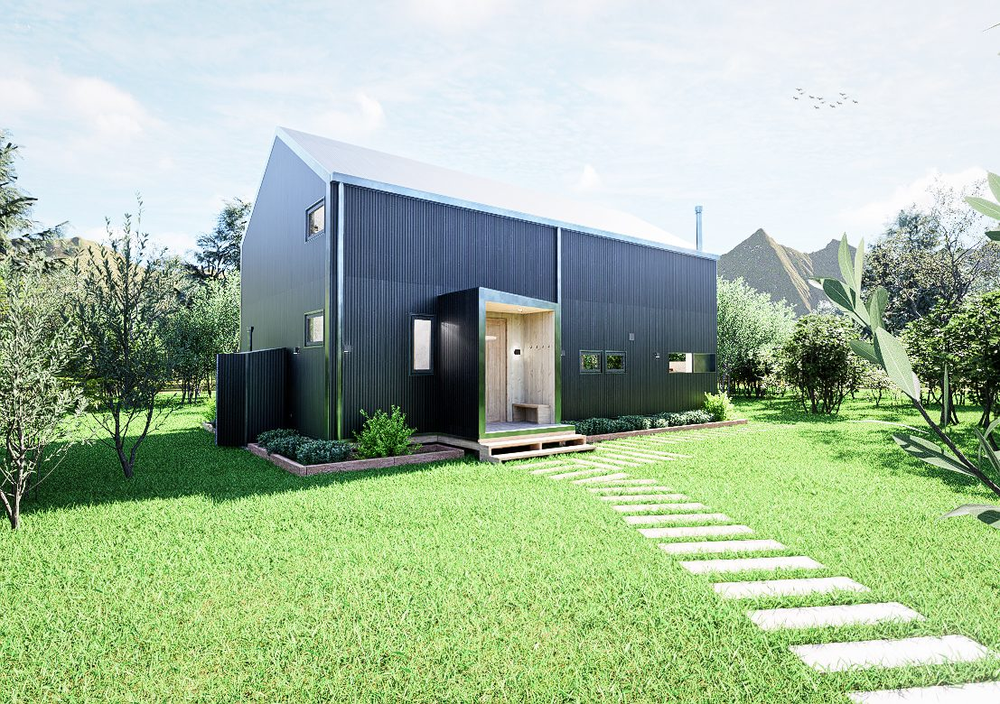

Ficha A-105 · Acceso de loteo
El acceso principal del loteo Fundo Santa Clara, en Talca: una doble hoja de reja vehicular enmarcada por una pérgola de acero y una plaza de acceso ajardinada.



El loteo Fundo Santa Clara, en Talca, encargó a YAARQ el diseño de su acceso principal: el primer elemento construido que ven los residentes y visitantes al llegar al loteo, y por lo tanto una carta de presentación para el conjunto completo.
La solución combina un muro de albañilería curvo que aloja el letrero identificatorio del loteo con una pérgola de estructura de acero que enmarca la reja de doble hoja de acceso vehicular. Un cierre de durmientes de madera, dispuestos en sentido vertical junto al muro, aporta textura y calidez al conjunto, contrastando con la solidez del muro estucado y el acero de la pérgola.
Hacia el interior de la reja, una plaza de acceso con jardinería y esferas de piedra ordena la llegada de los vehículos y marca el límite entre el camino público y el loteo privado, antes de que el recorrido continúe hacia los lotes individuales.